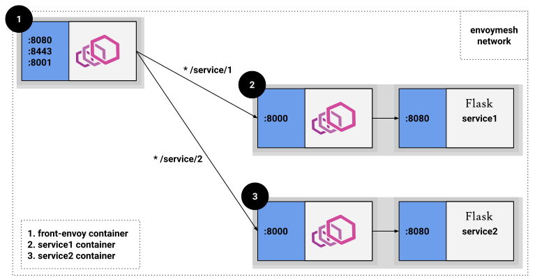

Front proxy
To get a flavor of what Envoy has to offer as a front proxy, we are releasing a docker compose sandbox that deploys a front Envoy and a couple of services (simple aiohttp apps) colocated with a running service Envoy.
The three containers will be deployed inside a virtual Docker network.
Below you can see a graphic showing the docker compose deployment:
{kind=link}

All incoming requests are routed via the front Envoy, which is acting as a reverse proxy sitting on
the edge of the Docker network. Port 8080, 8443, and 8001 are exposed by Docker
Compose (see docker-compose.yaml) to handle
HTTP, HTTPS calls to the services and requests to /admin respectively.
Moreover, notice that all traffic routed by the front Envoy to the service containers is actually
routed to the service Envoys (routes setup in envoy.yaml).
In turn the service Envoys route the request to the aiohttp app via the loopback
address (routes setup in service-envoy.yaml). This
setup illustrates the advantage of running service Envoys collocated with your services: all
requests are handled by the service Envoy, and efficiently routed to your services.
Step 1: Start all of our containers
Change to the front-proxy directory.
$ pwd
examples/front-proxy
$ docker compose pull
$ docker compose up --build -d
$ docker compose ps
Name Command State Ports
---------------------------------------------------------------------------------------------------------------------------------------------------------
front-proxy_front-envoy_1 /docker-entrypoint.sh /bin ... Up 10000/tcp, 0.0.0.0:8080->8080/tcp, 0.0.0.0:8001->8001/tcp, 0.0.0.0:8443->8443/tcp
front-proxy_service1_1 python3 /code/service.py ... Up (healthy)
front-proxy_service2_1 python3 /code/service.py ... Up (healthy)
Step 2: Test Envoy’s routing capabilities
You can now send a request to both services via the front-envoy.
For service1:
$ curl -v localhost:8080/service/1
* Trying ::1...
* TCP_NODELAY set
* Connected to localhost (::1) port 8080 (#0)
> GET /service/1 HTTP/1.1
> Host: localhost:8080
> User-Agent: curl/7.64.1
> Accept: */*
>
< HTTP/1.1 200 OK
< content-type: text/html; charset=utf-8
< content-length: 92
< server: envoy
< date: Mon, 06 Jul 2020 06:20:00 GMT
< x-envoy-upstream-service-time: 2
<
Hello from behind Envoy (service 1)! hostname: 36418bc3c824 resolvedhostname: 192.168.160.4
For service2:
$ curl -v localhost:8080/service/2
* Trying ::1...
* TCP_NODELAY set
* Connected to localhost (::1) port 8080 (#0)
> GET /service/2 HTTP/1.1
> Host: localhost:8080
> User-Agent: curl/7.64.1
> Accept: */*
>
< HTTP/1.1 200 OK
< content-type: text/html; charset=utf-8
< content-length: 92
< server: envoy
< date: Mon, 06 Jul 2020 06:23:13 GMT
< x-envoy-upstream-service-time: 2
<
Hello from behind Envoy (service 2)! hostname: ea6165ee4fee resolvedhostname: 192.168.160.2
Notice that each request, while sent to the front Envoy, was correctly routed to the respective application.
We can also use HTTPS to call services behind the front Envoy. For example, calling service1:
$ curl https://localhost:8443/service/1 -k -v
* Trying ::1...
* TCP_NODELAY set
* Connected to localhost (::1) port 8443 (#0)
* ALPN, offering h2
* ALPN, offering http/1.1
* successfully set certificate verify locations:
* CAfile: /etc/ssl/cert.pem
CApath: none
* TLSv1.2 (OUT), TLS handshake, Client hello (1):
* TLSv1.2 (IN), TLS handshake, Server hello (2):
* TLSv1.2 (IN), TLS handshake, Certificate (11):
* TLSv1.2 (IN), TLS handshake, Server key exchange (12):
* TLSv1.2 (IN), TLS handshake, Server finished (14):
* TLSv1.2 (OUT), TLS handshake, Client key exchange (16):
* TLSv1.2 (OUT), TLS change cipher, Change cipher spec (1):
* TLSv1.2 (OUT), TLS handshake, Finished (20):
* TLSv1.2 (IN), TLS change cipher, Change cipher spec (1):
* TLSv1.2 (IN), TLS handshake, Finished (20):
* SSL connection using TLSv1.2 / ECDHE-RSA-CHACHA20-POLY1305
* ALPN, server did not agree to a protocol
* Server certificate:
* subject: CN=front-envoy
* start date: Jul 5 15:18:44 2020 GMT
* expire date: Jul 5 15:18:44 2021 GMT
* issuer: CN=front-envoy
* SSL certificate verify result: self signed certificate (18), continuing anyway.
> GET /service/1 HTTP/1.1
> Host: localhost:8443
> User-Agent: curl/7.64.1
> Accept: */*
>
< HTTP/1.1 200 OK
< content-type: text/html; charset=utf-8
< content-length: 92
< server: envoy
< date: Mon, 06 Jul 2020 06:17:14 GMT
< x-envoy-upstream-service-time: 3
<
Hello from behind Envoy (service 1)! hostname: 36418bc3c824 resolvedhostname: 192.168.160.4
Step 3: Test Envoy’s load balancing capabilities
Now let’s scale up our service1 nodes to demonstrate the load balancing abilities of Envoy:
$ docker compose scale service1=3
Creating and starting example_service1_2 ... done
Creating and starting example_service1_3 ... done
Now if we send a request to service1 multiple times, the front Envoy will load balance the
requests by doing a round robin of the three service1 machines:
$ curl -v localhost:8080/service/1
* Trying ::1...
* TCP_NODELAY set
* Connected to localhost (::1) port 8080 (#0)
> GET /service/1 HTTP/1.1
> Host: localhost:8080
> User-Agent: curl/7.64.1
> Accept: */*
>
< HTTP/1.1 200 OK
< content-type: text/html; charset=utf-8
< content-length: 92
< server: envoy
< date: Mon, 06 Jul 2020 06:21:47 GMT
< x-envoy-upstream-service-time: 6
<
Hello from behind Envoy (service 1)! hostname: 3dc787578c23 resolvedhostname: 192.168.160.6
$ curl -v localhost:8080/service/1
* Trying 192.168.99.100...
* Connected to 192.168.99.100 (192.168.99.100) port 8080 (#0)
> GET /service/1 HTTP/1.1
> Host: 192.168.99.100:8080
> User-Agent: curl/7.54.0
> Accept: */*
>
< HTTP/1.1 200 OK
< content-type: text/html; charset=utf-8
< content-length: 89
< x-envoy-upstream-service-time: 1
< server: envoy
< date: Fri, 26 Aug 2018 19:40:22 GMT
<
Hello from behind Envoy (service 1)! hostname: 3a93ece62129 resolvedhostname: 192.168.160.5
$ curl -v localhost:8080/service/1
* Trying 192.168.99.100...
* Connected to 192.168.99.100 (192.168.99.100) port 8080 (#0)
> GET /service/1 HTTP/1.1
> Host: 192.168.99.100:8080
> User-Agent: curl/7.43.0
> Accept: */*
>
< HTTP/1.1 200 OK
< content-type: text/html; charset=utf-8
< content-length: 89
< x-envoy-upstream-service-time: 1
< server: envoy
< date: Fri, 26 Aug 2018 19:40:24 GMT
< x-envoy-protocol-version: HTTP/1.1
<
Hello from behind Envoy (service 1)! hostname: 36418bc3c824 resolvedhostname: 192.168.160.4
Step 4: Enter containers and curl services
In addition of using curl from your host machine, you can also enter the
containers themselves and curl from inside them. To enter a container you
can use docker compose exec <container_name> /bin/bash. For example we can
enter the front-envoy container, and curl for services locally:
$ docker compose exec front-envoy /bin/bash
root@81288499f9d7:/# curl localhost:8080/service/1
Hello from behind Envoy (service 1)! hostname: 85ac151715c6 resolvedhostname: 172.19.0.3
root@81288499f9d7:/# curl localhost:8080/service/1
Hello from behind Envoy (service 1)! hostname: 20da22cfc955 resolvedhostname: 172.19.0.5
root@81288499f9d7:/# curl localhost:8080/service/1
Hello from behind Envoy (service 1)! hostname: f26027f1ce28 resolvedhostname: 172.19.0.6
root@81288499f9d7:/# curl localhost:8080/service/2
Hello from behind Envoy (service 2)! hostname: 92f4a3737bbc resolvedhostname: 172.19.0.2
Step 5: Enter container and curl admin
When Envoy runs it also attaches an admin to your desired port.
In the example configs the admin is bound to port 8001.
We can curl it to gain useful information:
/server_info provides information about the Envoy version you are running.
/stats provides statistics about the Envoy server.
In the example we can enter the front-envoy container to query admin:
$ docker compose exec front-envoy /bin/bash
root@e654c2c83277:/# curl localhost:8001/server_info
{
"version": "093e2ffe046313242144d0431f1bb5cf18d82544/1.15.0-dev/Clean/RELEASE/BoringSSL",
"state": "LIVE",
"hot_restart_version": "11.104",
"command_line_options": {
"base_id": "0",
"use_dynamic_base_id": false,
"base_id_path": "",
"concurrency": 8,
"config_path": "/etc/envoy.yaml",
"config_yaml": "",
"allow_unknown_static_fields": false,
"reject_unknown_dynamic_fields": false,
"ignore_unknown_dynamic_fields": false,
"admin_address_path": "",
"local_address_ip_version": "v4",
"log_level": "info",
"component_log_level": "",
"log_format": "[%Y-%m-%d %T.%e][%t][%l][%n] [%g:%#] %v",
"log_format_escaped": false,
"log_path": "",
"service_cluster": "front-proxy",
"service_node": "",
"service_zone": "",
"drain_strategy": "Gradual",
"mode": "Serve",
"disable_hot_restart": false,
"enable_mutex_tracing": false,
"restart_epoch": 0,
"cpuset_threads": false,
"disabled_extensions": [],
"bootstrap_version": 0,
"hidden_envoy_deprecated_max_stats": "0",
"hidden_envoy_deprecated_max_obj_name_len": "0",
"file_flush_interval": "10s",
"drain_time": "600s",
"parent_shutdown_time": "900s"
},
"uptime_current_epoch": "188s",
"uptime_all_epochs": "188s"
}
root@e654c2c83277:/# curl localhost:8001/stats
cluster.service1.external.upstream_rq_200: 7
...
cluster.service1.membership_change: 2
cluster.service1.membership_total: 3
...
cluster.service1.upstream_cx_http2_total: 3
...
cluster.service1.upstream_rq_total: 7
...
cluster.service2.external.upstream_rq_200: 2
...
cluster.service2.membership_change: 1
cluster.service2.membership_total: 1
...
cluster.service2.upstream_cx_http2_total: 1
...
cluster.service2.upstream_rq_total: 2
...
Notice that we can get the number of members of upstream clusters, number of requests fulfilled by them, information about http ingress, and a plethora of other useful stats.
See also
- Envoy admin quick start guide
Quick start guide to the Envoy admin interface.